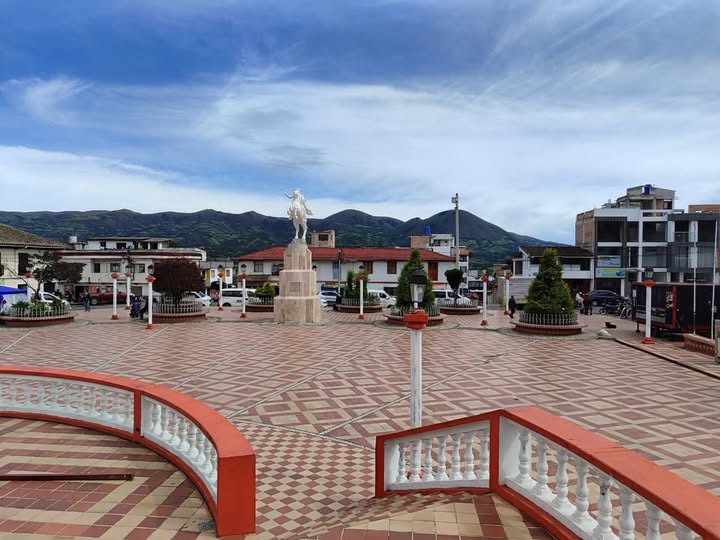

NARIÑO · COLOMBIA
01
Descubre
Guachucal
NATURALEZA Y PAISAJES01 / 06
ARRASTRA · DESLIZA · EXPLORA
GUACHUCAL · NARIÑO
Un lugar para
conocer, explorar
y disfrutar.
Déjate sorprender por los hermosos paisajes, la naturaleza, las tradiciones y los sabores de Guachucal, Nariño. Conoce lugares especiales, apoya los emprendimientos locales y disfruta experiencias que te conectan con la esencia de nuestra tierra.
¡Guachucal te espera con mucho por conocer y disfrutar!

¿QUIERES SABER MÁS?